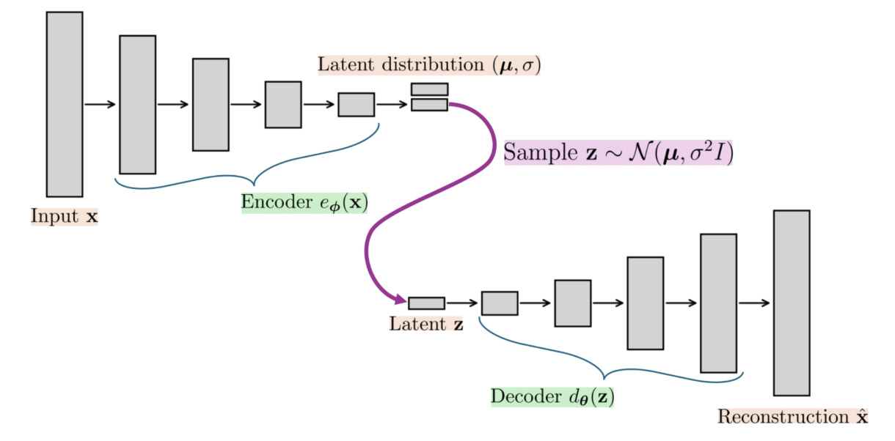

Generative Models - Answers
- In the scenario of taking multiple MIT students and measuring their heights to get an average height of an MIT student, what is an example of a sample?
- Any student
- Any MIT student
- Any MIT student whose height was measured
- None of the above
Explanation: Sample is the specific group the data we collected from. In this example, it is any MIT student whose height was measured.
- In the scenario of taking multiple MIT students and measuring their heights to get an average height of an MIT student, what is an example of a density function?
- Normal distribution with mean equal to the average of measured heights
- f(x) = 1/|students whose height was measured|
- All of the above
- None of the above
Explanation: Density is a function that gives us a likelihood of the input happening/appearing. It does not need to be necessarily to the true underlying probability any probability would do.
- What are the differences between the data-generating distribution \(p(x)\), the parametric model \(p_\theta(x)\), and the empirical distribution \(\hat{p}(x)\)?
- \(p(x)\) is the underlying distribution, \(p_\theta(x)\) is our approximation of \(p(x)\), and \(\hat{p}(x)\) is the real-world distribution we cannot measure
- \(p(x)\) is the underlying distribution, \(p_\theta(x)\) is our approximation of \(p(x)\), and \(\hat{p}(x)\) is the real-world distribution we can measure
- \(p(x)\) is the underlying distribution, \(p_\theta(x)\) is the real-world distribution we can measure, and \(\hat{p}(x)\) is our approximation of \(p(x)\)
- \(p(x)\) is the real-world distribution we can measure, \(p_\theta(x)\) is the underlying distribution, and \(\hat{p}(x)\) is our approximation of \(p(x)\)
Explanation: \(p(x)\) is the true underlying distribution that we want to find, but cannot be measured. So we try to find an approximation \(p_\theta(x)\) that we model that is close to the true distribution. Since the true distribution cannot be measured we evaluate goodness of \(p_\theta(x)\) by comparing to the real-world empirical distribution \(\hat{p}(x)\) that we can measure.
- What is the main property we want \(p_\theta(x)\) to have?
- Be as close to \(\hat{p}(x)\) as possible
- Be as close to \(p(x)\) as possible
- Be as different from \(p(x)\) as possible
- Be as different from \(\hat{p}(x)\) as possible
Explanation: We want the learned distribution \(p_\theta(x)\) to be as close as possible to the underlying real distribution \(p(x)\).
- Can we measure data-generating distribution \(p(x)\)?
(b) No.
Explanation: We cannot measure \(p(x)\) since we do not know what the real underlying distribution is. All we know is the empirical distribution from the data collected.
- How do we evaluate how good \(p_\theta(x)\) is?
- Measure the distance to \(p(x)\), want small
- Measure the distance to \(p(x)\), want big
- Measure the distance to \(\hat{p}(x)\), want small
- Measure the distance to \(\hat{p}(x)\), want big
Explanation: Since we cannot measure \(p(x)\), we evaluate \(p_\theta(x)\) by comparing it the empirical distribution, specifically we want the two to be as close to each other as possible. This should work well because if the dataset we collected is big, then empirical distribution is close to the real underlying distribution.
- In the modified setting, \(x = f_\theta(z)\), what is \(z\)?
(b) Random noise.
Explanation: input \(z\) here is random noise
- In the modified setting, \(x = f_\theta(z)\), what is \(\theta\)?
(c) Parameter vector.
Explanation: \(\theta\) is as before a parameter vector
- In the modified setting, \(x = f_\theta(z)\), what is \(x\)?
(a) Sample.
Explanation: \(x\) is now a sample.
—---
- What do latent variant models try to do?
- Map simple data to a latent space with a more complex structure
- Map complex data to a latent space with a simpler structure
- Cram data into a smaller space
- Cram data into a bigger space
Explanation: Latent variant models try to find a representation of data in a lower dimension. In other words, map complex-looking data into a simple structure by smashing/cramming data into a smaller space.

- Given the example above, what do you call going from \(x\) to \(a\)? (a) Encoding.
Explanation: transforming input into a lower dimensional space is called encoding.
- Given the example above, what do you call going from \(a\) to \(x'\)?
(b) Decoding.
Explanation: transforming lower dimensional representation into a higher dimensional space is called decoding.
- Given the example above, what is the main goal in representation learning?
- Find an encoder
- Find a decoder
- Find an encoder and decoder
- None of the above.
Explanation: We want to find both the encoder and decoder. Encoder helps us transform data into the lower dimensional space. While decoder helps us evaluate that the encoder is valid.
- What is an architecture that can be used for representation learning?
- Just MLP
- NN, where the first half decreases the dimension of the input till bottleneck is reached, and the second half increases the dimension of the bottleneck
- Autoencoder
- Just CNN.
Explanation: Autoencoder is an neural network where the first half decreases the dimension of the input till bottleneck is reached, and the second half increases the dimension of the bottleneck. The first half of the autoencoder is encoder, while the second half is the decoder.

- Given the above simple autoencoder, which of the following describe(s) the reconstruction loss?
- \(L = \frac{1}{N} \sum_i^N (||\hat{x} - x||^2)\)
- \(L = \frac{1}{N} \sum_i^N (||f^2((W^1)^T f^1((W^2)^T x)) - x||^2)\)
- \(L = \frac{1}{N} \sum_i^N (||f^2((W^2)^T f^1((W^1)^T x)) - x||^2)\)
- \(L = \frac{1}{N} \sum_i^N (||f^1((W^1)^T f^2((W^2)^T x)) - x||^2)\)
Explanation: Reconstruction loss measures the difference between the input and the reconstructed value. Here reconstructed value is \(\hat{x} = f^2((W^2)^T f^1((W^1)^T x))\) based on the architecture shown above.
- Given the above simple autoencoder, if \(x \in \mathbb{R}^10\), which of the following dimensions for \(a\) does not make sense?
- 3
- 7
- 10
- 13
Explanation: \(a\) is the bottleneck, so it only makes sense if the dimension of the bottleneck is lower than the dimension of the input. Therefore 10 and 13 are not useful bottleneck dimensions.
- What is one of the main potential problems with an autoencoder?
(b) Can get an arbitrarily complex latent space.
Explanation: Because there is no constrain on how complex the latent space can be, the model can learn to have it arbitrarily complex. For example, it could overfit the data and create a one-to-one mapping even onto a 1D space.
- How is the problem of arbitrarily complex latent space solved?
- Remove a constraint from the latent space
- Variational autoencoders. (VAE)
- Introduce an additional constraint to the latent space
- None of the above
Explanation: To resolve this issue VAEs introduce an additional constraint to the latent space such that it cannot get too complicated.
- What is the process for going from \(x\) to its reconstruction in VAE?
(b) Run encoder on \(x\). It will produce a mean \(\mu\) and standard deviation \(\sigma\). Sample random number from \(\mathcal{N}\)(\(\mu, \sigma^2I\)). Run that number through the decoder to get the reconstruction.
Explanation:

As described in the figure above, encoder \(e_\phi(x)\) takes in the input \(x\) and returns mean \(\mu\) and standard deviation \(\sigma\). Next z is sampled from a normal distribution \(\mu\) and standard deviation \(\sigma\) \(\mathcal{N}\)(\(\mu, \sigma^2I\)). Finally, decoder \(d_\theta(z)\) thats in sampled \(z\) and returns reconstructed \(\hat{x}\).- What are the properties that we want a learned VAE to have?
- Good reconstruction of input.
- Want mean to be close to 0 and variance to be big.
- Want mean to be close to 0 and variance to be small.
- Want mean to be close to 0 and variance to be close to 1.
Explanation: As with autoencoders, we want a small reconstruction loss. To enforce the new constraint we also want mean (produced by the encoder) to be close to 0 and the variance (produced by the encoder) to be close to 1.
- What are some problems with VAE?
- Can get an arbitrarily complex latent space
- The encoder is very complicated
- The architecture is hard to train
- The architecture is easy to train
Explanation: Encoding a complicated structure into a simple space is really hard, so the encoder can get very complicated. Moreover, the architecture is hard to train and can be unstable.
- What is the main function we want a diffusion model to have?
(a) Want a model that can undo noise (denoising).
Explanation: Want to find a model that can gradually denoise an object. This model can be used to iteratively denoise an object to get an output that looks like something sampled from a real distribution.
- How can a diffusion model be used to generate random (realistic) images?
(b) Sample a noisy image from gaussian and repeatedly denoise.
Explanation: Given a diffusion model, we can randomly select an image from Gaussian distribution and apply our diffusion model to repeatedly denoise the image.
- How is the denoiser trained in practice?
- Predict the denoised image
- Predict the noise added to the input
- Predict any image
- None of the above
Explanation: While we want a model that can gradually denoise an object, training process consists of predicting noise added to an object. This can then be used to remove the found noise.
- What architecture is typically used?
(b) Unet.
Explanation: In practice, specialized architecture called Unet is used to train a diffusion model (this article gives a simple introduction with example code).
- What is a token in text generation?
(b) A small piece of text, like a word or a syllable.
Explanation: Token is an individual unit of text. Tokens are usually small: a word, a syllable, or even punctuation.
- What is the goal of a text generative model?
- Predict a sentence
- Predict multiple words at a time
- Next token prediction
- None of the above
Explanation: Goal of text generative model is next token prediction - given an input text, predict the next unit of text that should follow given text.
- Why is the next-token prediction model called autoregressive?
- We repeatedly call \(f_\theta\) on the output from the last step, attached to the input of the last step
- We repeatedly call \(f_\theta\) on the output from the last step, attached to the initial input
- We repeatedly call \(f_\theta\) on the initial input
- None of the above
Explanation: We call a model autoregressive if current output depends on a combination of previous outputs. If \(x_0\) is input, then next-token prediction model calls \(f_\theta\) on \(x_0\) to get \(x_1\). In the next step, the next-token prediction model calls \(f_\theta\) on \(x_0,x_1\) to get \(x_2\) and so on. In other words we repeatedly call \(f_\theta\) on the output from the last step, attached to the input of the last step, which makes it autoregressive.
- How is text represented for text-generative models?
(b) As word embeddings in numerical space.
Explanation: For text-generative models (and a lot of other models dealing with text), text is represented as word embeddings in numerical space with special properties.
- What are the main properties of word embeddings?
- Map sentences to a lower-dimensional space
- Map words to a lower-dimensional space
- Words that are close in meaning are close in space
- Sentences that are close in meaning are close in space
Explanation: Specifically, the numerical space that words are mapped on has lower dimension compared to number of all possible words in a given dictionary. Moreover, this space has a semantic meaning: words that are close in meaning are mapped closely in the numerical space.
- How is the context of the text taken into account in text generative models?
(a) Input contains the full text that has the context.
Explanation: Since we repeatedly provide output from last step as part of the input for next step of calling a text generative model \(f_\theta\), we are effectively providing context of the full text as part of the input. In the example "This is a lecture on generative" -> "models", we give the context of "This is a lecture on generative" as input. For the next step, we would have "This is a lecture on generative models" -> ".", we are giving the context of "This is a lecture on generative models" as input to the text generative models.
- What architecture is typically used for text generative models?
(d) attention/transformers.
Explanation: In practice, transformers are used to train text generative models. Transformers are at the heart of training architecture of modern LLMs (here is a simple article on transformers in LLMs).
Bonus: 33. Evaluation is hard since no ground truth to compare to. What is typically used?
- Sample quality (does it look real)
- Sample diversity (samples should not repeat)
- Sample coverage (all possibilities covered)
- Faithfulness to the data (too creative)
- Human evaluation
- Proxy metrics
- Downstream tasks
Explanation:
- What are some ethical problems?
- Data sourcing/attribution
- Deep fakes
- Data privacy
- Bias amplification
- environment/energy cost
Explanation: